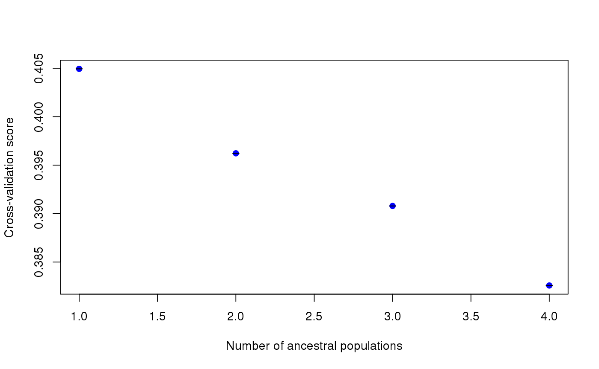
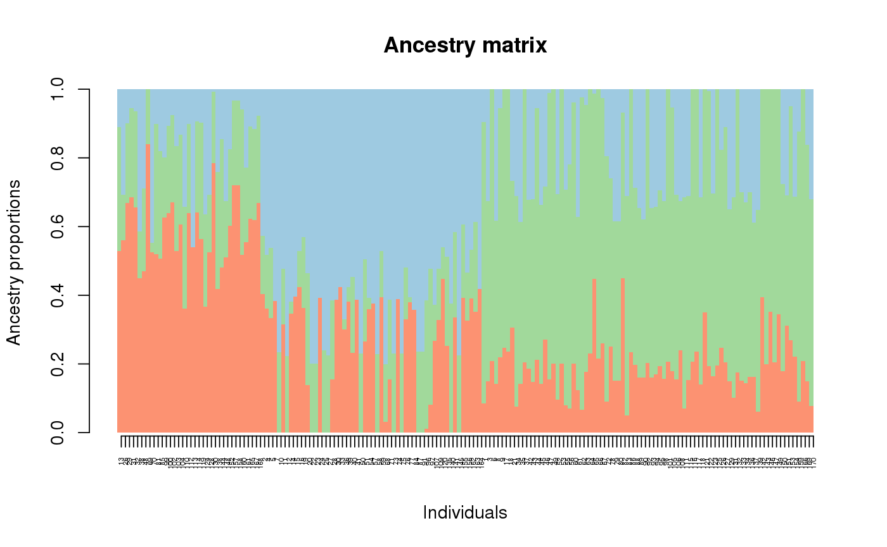
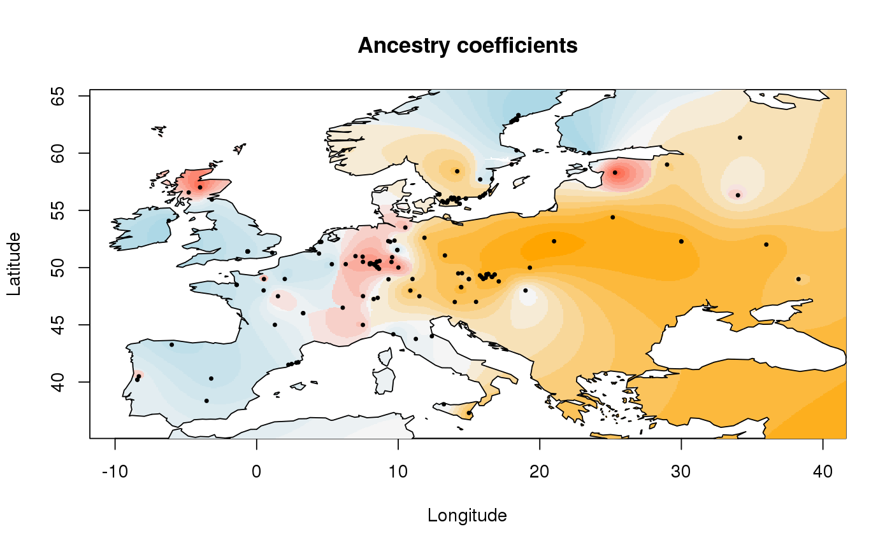
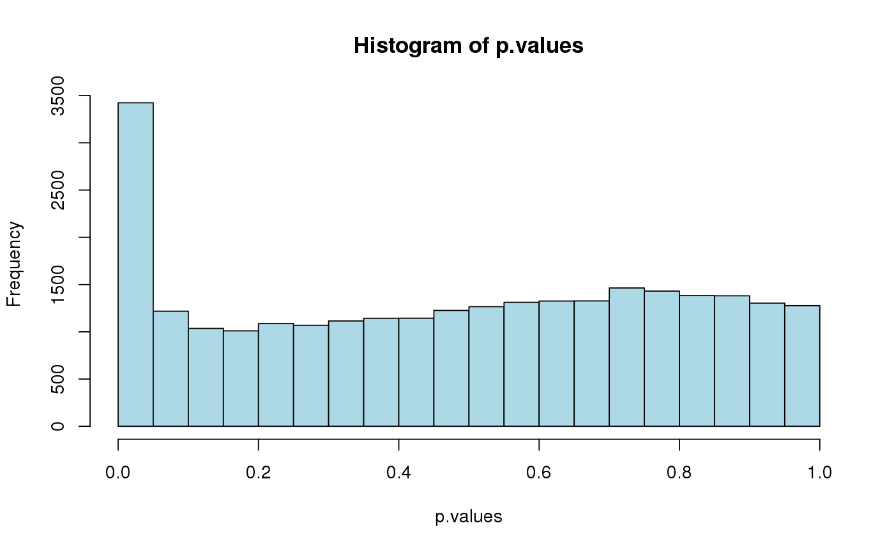
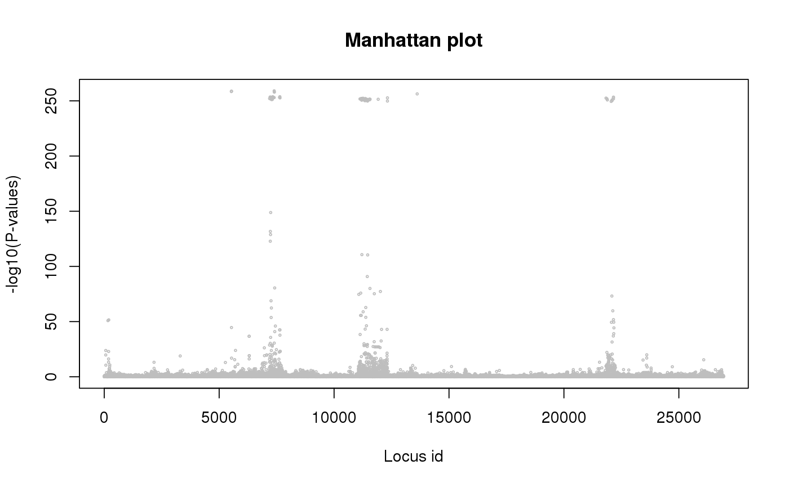

tess3 is the main function of the tess3r package. It runs
a graph-based nonnegative matrix factorization algorithm that includes
geographic data in the estimation of spatial population structure.
The function requires individual genotypes, geographic coordinates, and
it can be run for multiple values of the number of ancestral populations.
In addition, the function uses the estimates of ancestry coefficients to
compute an Fst statistic for each locus, and to return test significance
values for a null hypothesis of selective neutrality. See the references
for more details.
tess3(X, XProba = NULL, coord, K, ploidy, lambda = 1, rep = 1, W = NULL, method = "projected.ls", max.iteration = 200, tolerance = 1e-05, openMP.core.num = 1, Q.init = NULL, mask = 0, algo.copy = TRUE, keep = "best", verbose = FALSE)
| X | a matrix of individual genotypes. This matrix must
have \(n\) rows and \(L\) columns where \(n\) is the number of individuals and
\(L\) is the number of loci. The entries of this matrix are integers between 0 and
ploidy, that correspond to the number of derived/reference alleles observed at each locus.
If |
|---|---|
| XProba | A matrix which contains individual genotype likelihoods (probabilities) for each
locus. This matrix must contain \(n\) rows and \((ploidy + 1)L\) columns where
\(n\) is the number of individuals, and \(L\) is the number of loci. The entries of
this matrix are numeric values ranging between 0 and 1, and corresponding to genotype
probabilities for each locus. If |
| coord | a matrix of size \(n \times 2\) where \(n\) is the number of individuals encoding the longitude and latitude of each individual (numeric system). |
| K | an integer or a vector of integers corresponding to the number of ancestral populations. |
| ploidy | an integer corresponding to ploidy of the studied organism. Haploids have ploidy = 1, diploids have ploidy = 2, etc. |
| lambda | a numeric value for the spatial regularization parameter. The default value lambda = 1 attributes equal weights to the loss function and to the penalty function. |
| rep | integer. The number of time the algorithm will be repeated for each value of
|
| W | a matrix which corresponds to the graph weightings.
If NULL, W is computed as
|
| method | a character string |
| max.iteration | the maximum number of iterations of the optimization algorithm. |
| tolerance | a numeric value corresponding to the stopping criteria of the optimization algorithm. |
| openMP.core.num | integer representing the number of cores used by the optimization algorithm. It requires that the openMP library is installed in your OS (default for macOS is no). |
| Q.init | a matrix for initial values of ancestry coefficients for the algorithm. The default value is a random matrix. |
| mask | If not |
| algo.copy | boolean. If TRUE data is copied to speed up the algorithm. |
| keep | If |
| verbose | If |
An object of class tess3 which corresponds to a list of length length(K).
Each element of this list has the following attributes
the number of ancestral populations
if keep = "best", the tess3Main result
with the lowest value of the rmse (loss) function. If keep = "all",
a list of tess3Main results for each repetition
root mean squared error between the genotypic matrix XProba and the
fitted matrix for each program repetition
cross-entropy between the genotypic matrix XProba and the
fitted matrix for each program repetition
root square mean error between the masked values of genotypic matrix
XProba[masked] and their fitted values for each repetition. If mask is FALSE, then NULL.
cross-entropy between the masked values of genotypic matrix
XProba[masked] and their fitted values for each repetition. If mask is FALSE, then NULL.
Methods available for this class:
http://onlinelibrary.wiley.com/doi/10.1111/1755-0998.12471/full Caye, Kevin et al. (2016) Fast Inference of Individual Admixture Coefficients Using Geographic Data. bioRxiv doi:10.1101/080291. http://biorxiv.org/content/early/2016/10/12/080291
tess3Main, plot.tess3Q,
barplot.tess3Q
library(tess3r) # Arabidopsis thaliana data set data(data.at) genotype <- data.at$X coordinates <- data.at$coord # Running the tess3 function tess3.obj <- tess3(X = genotype, coord = coordinates, K = 1:4, method = "projected.ls", ploidy = 1)#> == Computing spectral decomposition of graph laplacian matrix: done #> ==Main loop with 1 threads: done #> == Computing spectral decomposition of graph laplacian matrix: done #> ==Main loop with 1 threads: done #> == Computing spectral decomposition of graph laplacian matrix: done #> ==Main loop with 1 threads: done #> == Computing spectral decomposition of graph laplacian matrix: done #> ==Main loop with 1 threads: done# Plot error plot(tess3.obj, pch = 19, col = "blue", xlab = "Number of ancestral populations", ylab = "Cross-validation score")# Retrieve the Q-matrix for K = 3 clusters q.matrix <- qmatrix(tess3.obj, K = 3) ## STRUCTURE-like barplot for the Q-matrix barplot(q.matrix, border = NA, space = 0, xlab = "Individuals", ylab = "Ancestry proportions", main = "Ancestry matrix") -> bp#> Use CreatePalette() to define color palettes.axis(1, at = 1:nrow(q.matrix), labels = bp$order, las = 3, cex.axis = .4)## Spatial interpolation of ancestry coefficient my.colors <- c("tomato", "orange", "lightblue") my.palette <- CreatePalette(my.colors, 9) plot(q.matrix, coordinates, method = "map.max", interpol = FieldsKrigModel(10), main = "Ancestry coefficients", xlab = "Longitude", ylab = "Latitude", resolution = c(500,500), cex = .4, col.palette = my.palette)#>## Genome scan p-values for K = 3 p.values <- pvalue(tess3.obj, K = 3) hist(p.values, col = "lightblue")## Manhatan plot plot(p.values, main = "Manhattan plot", xlab = "Locus id", ylab = "-log10(P-values)", cex = .3, col = "grey")